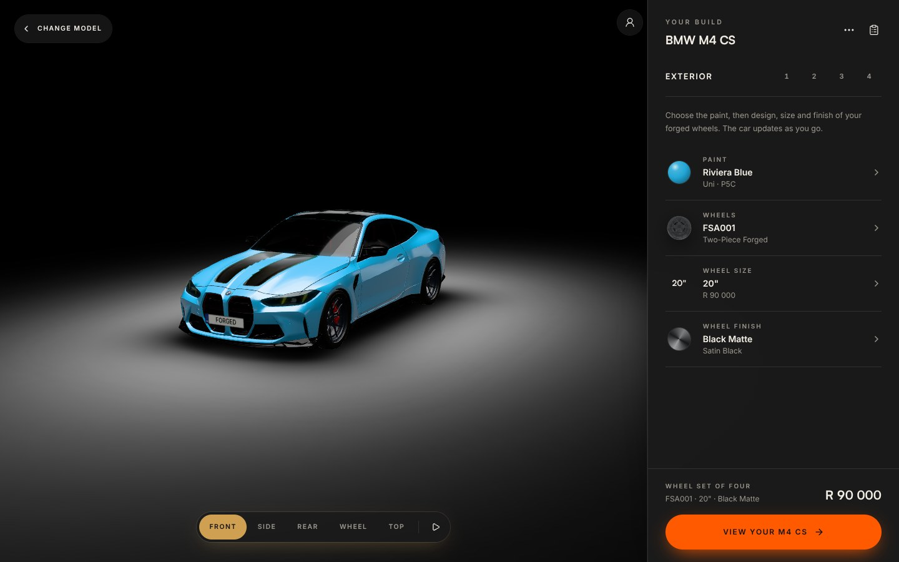
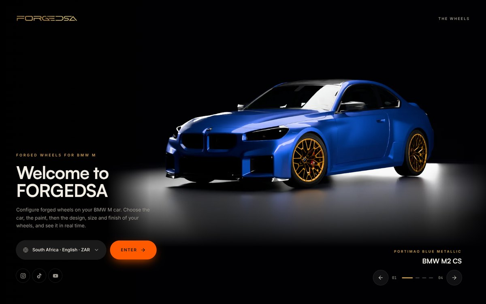
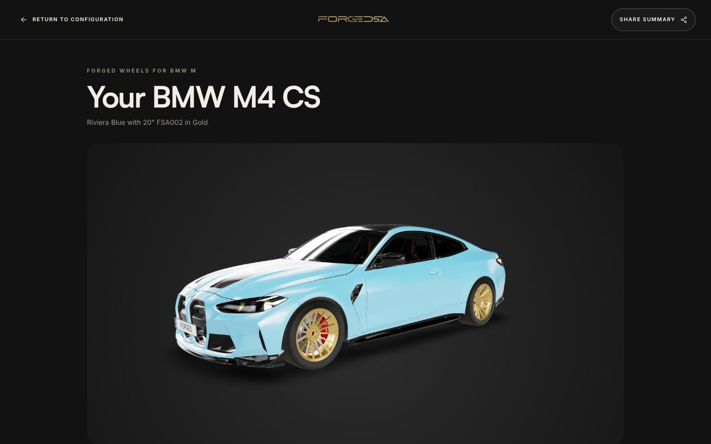
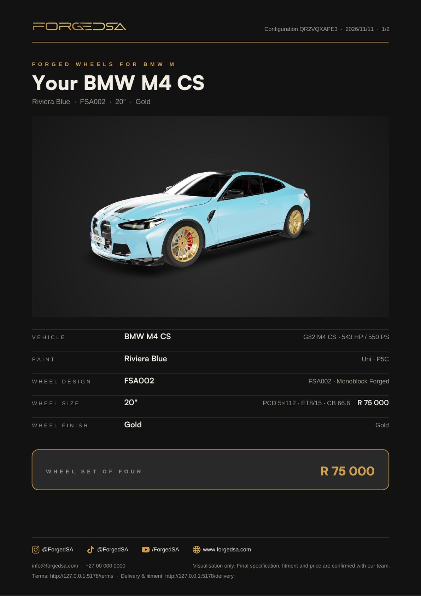
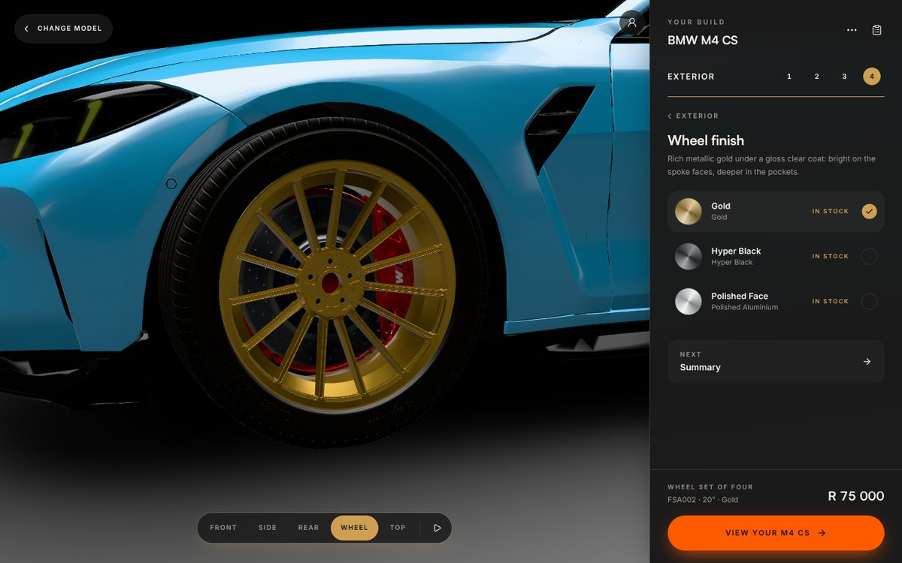
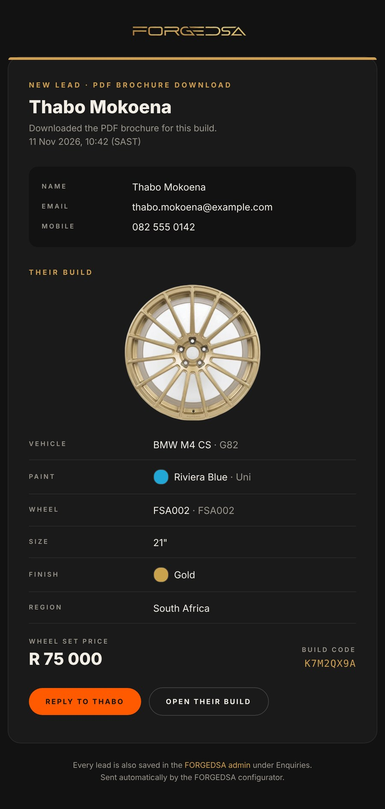

What has been built, how your customers use it, how you run it day to day, and what is
still needed from you before launch. Written in plain language. No technical knowledge needed.
Live siteforged-configurator.vercel.app
Adminforged-configurator.vercel.app/admin
Preview of the latest workforgedsa-configurator.onrender.com
Handed over28 September 2026 · Updated 12 November 2026
Before launch
Outstanding work
The configurator works end to end. The 10 November update (your four prepared cars, your
six stocked wheels at the stock sheet's prices, customer accounts) is built and live
(the site was redeployed on 12 November). What is left is below, in order:
Outstanding · 1 of 4
Connect the live site to the code
The database updates for November are done: all fifteen update files were applied on 10 November and read back on 11 November, and the M2 CS now carries its correct name in the live database.
The live site was redeployed from the main branch on 12 November and now shows the new cars and wheels. The live address is still not connected to the code repository, so a merge does not update it by itself: your developer has to start each production deployment (HANDOVER.md, section 5).
Needed from you: a few minutes from whoever has the Vercel login, to connect the project to the code repository so updates deploy by themselves.
Outstanding · 2 of 4
Switch on Google sign-in for customers
A Google sign-in client has to be created in Google Cloud and pasted into Supabase, and the site addresses customers may return to have to be listed (the live site, the preview addresses). The step-by-step is in ACCOUNTS.md, "Owner steps".
Until then the Continue with Google button fails and the garage cannot be used. Everything else works.
Needed from you: access to a Google Cloud account for FORGEDSA (or ours, with your approval).
Outstanding · 3 of 4
Licence for the four car models
The M2 CS, M4 CS, M5 and M5 Touring bodies came in packages without a licence (their read-me says so). They are recorded as licence not confirmed and should be treated as prototype assets until a licence that covers use on a public website is in hand.
The earlier community-licensed cars (M3, M4 Competition, M3 Touring, M235, M8, X3 M50, X5 M) were deleted from the configurator on 11 November at your request. Copies are kept in a private archive, so your developer can bring one back when a prepared package for it arrives.
Needed from you: the licence terms for the packages, and the remaining packages when ready.
Outstanding · 4 of 4
Check the Terms & conditions and Delivery pages for content accuracy
Both pages are live drafts (section 08). Every statement must match how FORGEDSA actually trades, the bracketed details must be filled in, and your attorney must review them. Then the draft note comes off.
Needed from you: the bracketed details and legal sign-off.
01
What you have
A premium, 3D online showroom where a BMW M owner picks their exact car and factory paint
colour, then tries your forged wheels on it in real time: design, size and finish, from any angle, on a
laptop or phone. When they are happy, they get a summary of their build with studio images and the price,
can download a branded PDF, share a link, send you an enquiry, or sign in with Google and keep the build
in their garage. Every PDF download and enquiry is emailed to you straight away as a
branded lead summary. Behind it sits a secure back end (database, file storage and
logins) and an admin panel where you add wheels, cars and prices yourself, and read
customer enquiries. No developer is needed for day-to-day changes.
4BMW M models: M2 CS, M4 CS, M5 and M5 Touring
6Stocked wheel designs, each a real 3D rim
8Finishes, as listed on your stock sheet
2Sizes per wheel: 19" and 20" for FSA001, 20" and 21" for the others
5Regions and currencies, South Africa and Rand by default
SecondsFrom a PDF download or enquiry to a lead email in your inbox

The configurator: the car on the dark stage, the step-by-step panel beside it, the camera buttons underneath and the set price always in view.
02
The customer journey, step by step
We mapped and built every step a customer takes, from the first second to the PDF they keep.

Welcome: the four cars, one at a time
360° wheel view: the wheel on its own

Summary: their build, price and actions
Step
What the customer sees
Why it matters
1 · Loading
A FORGEDSA wheel drawn in fine gold lines while the 3D studio loads.
First impression is on-brand, never a blank screen.
2 · Welcome
A studio picture of one of your four cars (M2 CS, M4 CS, M5, M5 Touring) on a dark stage. The customer moves between the cars with the arrows, by scrolling, with the keyboard, by swiping or with the dots. Also on the screen: the FORGEDSA logo, a region and currency picker (South Africa and Rand by default) and Enter, which opens the configurator on the car showing. Your Instagram, TikTok and YouTube links sit underneath.
Customers find their car and the right currency straight away.
3 · Configurator
The car on a dark stage (a black background and a pool of light on the floor, modelled on the welcome pictures). The M2 CS, M4 CS and M5 Touring are drawn live in 3D, with "FORGED" number plates; their reflections and shadows are simpler than in the welcome pictures. The M5 shows pre-rendered studio images in the fixed camera views. Beside the car is a panel (a bottom sheet on phones) that goes step by step: an overview, then Paint, Wheels, Size and Finish. Buttons over the stage change the camera angle (Front, Side, Rear, Wheel, Top) or turn the car slowly. Change model goes back to the welcome screen to pick another car. The … button at the top of the panel (More options) holds the region and currency, loading a build by its code, Account & garage, links to The wheels, Enquire, Delivery & fitment, Terms & conditions and Credits, and Start again (back to the welcome screen). Picking a wheel, size or finish cuts the camera to a close-up of the wheel; the Wheel button returns to it. The price of the set of four is always visible, and rises when a dearer finish is chosen.
The heart of the experience: they see their car on your wheels.
4 · 360° wheel view
The View in 360° button next to the chosen wheel opens the wheel on its own in a 3D studio: fixed views (face, three-quarter, side, back, top), its finishes, sizes and price, and See it on my car. It is the same wheel viewer as on your website and uses the same 3D wheel files as the car.
Lets them study the design up close.
5 · Summary
Three studio images of their build, every option chosen, the price, and buttons to share, download the PDF, enquire, or Save to garage (signed in). A short note says the cars are visualisations and final fitment is confirmed with your team.
Turns interest into a lead, and manages expectations before they enquire.
6 · The PDF
Before it downloads, the customer enters their email address and mobile number (name optional). Then a two-page, dark, gold FORGEDSA spec sheet is generated instantly in their browser: studio images, options, price, wheel story, next steps, a link back to their exact build, your social channels and contact details.
Something they keep and forward. Every download gives you a lead with their contact details and exact build, emailed to you straight away.
7 · Enquiry
A short form (name, email, phone, message, "I'd like a consultation"). Their full configuration is attached automatically.
You receive a qualified lead with the exact build, by email within seconds (section 06).
8 · Share link / code
Every build gets a short code and link that reopens it exactly.
Customers can send their build to friends; you can open it from an enquiry.
9 · Account and garage
The Account button (top corner of the stage) opens a sheet: Continue with Google, then their profile (name, phone, city, their car) and a garage of saved builds they can open, rename or delete. The PDF and enquiry forms are pre-filled from the profile. Nobody has to sign in; everything above works anonymously.
Returning customers pick up where they left off, and their enquiries carry their account. Details and what is stored (POPIA): ACCOUNTS.md.
Also on the site: The collection (all wheel designs), Delivery & fitment, Terms & conditions, and a footer with your social channels and contact details on every long page. These pages are reached from More options in the configurator and from the footer; the welcome screen has its own The wheels link. The menu button and top bar of the earlier version went with the showroom page.
What customers choose
Car
Four BMW M models, the prepared packages you supplied: M2 CS, M4 CS, M5 and M5 Touring. The earlier community-licensed cars (M235i, M3, M3 Touring, M4 Competition, M4 Convertible, M8, X3 M50, X5 M) were deleted from the catalogue on 11 November at your request, and their 3D files were removed with the other unused files. Copies of their catalogue entries are kept in a private archive, but they do not appear in the admin panel and cannot be switched back on there. Bringing one back needs a prepared package, a picture on the welcome screen and your developer.
Paint
The exact BMW South Africa factory colours offered for that car, researched from BMW's own configurator. A customer can match what they specced at the dealer.
Wheel design
The six wheels on your stock sheet (FSA001, FSA002, FSA003, FSA004, FF-1, FF-3), as real 3D rims (section 07).
Size
Only the sizes the sheet lists for that wheel (19" and 20" for FSA001; 20" and 21" for the others), each with its own price.
Finish
Only the finishes the sheet lists for that wheel: Gold, Hyper Black, Polished Face, Silver, Gloss Black, Pure Bronze, Liquid Metal (chrome) and Black Matte. Polished Face (FSA002) and Liquid Metal (FF-1, FF-3) cost more, and the price shown rises when they are chosen.
03
The look: your brand kit, applied
The whole site follows the FORGEDSA Official Brand Design System, and so do the PDF spec sheet and the lead email.
Matte Carbon#121212 · backgrounds
Gunmetal#2A2A2A · surfaces
Forged Gold#CF9F52 · logo, selections, prices
Brass Light#E8C37D · hovers
Electric Orange#FF5A00 · main action buttons

The customer's PDF spec sheet, page 1
Electric Orange is the action colour, used only on the main buttons that move a customer forward: Enter, View your build, Download PDF, Send enquiry. The same colour is used for the "Open your build online" button in the PDF and the Reply button in the lead email.
Forged Gold is used for everything else that stands out: the logo, selected options, steps, prices and headings. Brass Light is used for hovers.
Type: Satoshi for headlines, Inter for everything else, exactly as the kit specifies.
Logo: the gold FORGEDSA wordmark in the header of every page and on the PDF. We cut it out of the image you sent (which had a printed checkerboard, not real transparency).
Social channels: Instagram @ForgedSA, TikTok @ForgedSA, YouTube /ForgedSA and www.forgedsa.com appear on the welcome screen, in the footer and in the PDF.
Favicon (browser tab icon): a temporary gold "F". Send us the hexagon monogram and we swap it in.
Choosing a wheel cuts to a close-up

The finish step
04
Behind the scenes: the back end
We set up a proper back end so the site is secure and you can manage it without a developer.
Part
What it does
Where it lives
Database
Holds every car, paint colour, wheel, finish and price, plus saved builds and customer enquiries.
Supabase (a hosted database service)
File storage
Holds the 3D car files, wheel images and wheel 3D models.
Supabase Storage
Logins
Customers sign in with Google to keep a garage (once Google sign-in is switched on, outstanding work 2). Only people on your admin list, with a confirmed email, can change anything; a customer account gets nothing in the admin panel. The protection is enforced by the database itself, not just hidden buttons.
Supabase Auth
Hosting
Serves the website worldwide, fast.
Vercel
Lead emails
Emails forgedsa1@gmail.com a branded summary of every PDF download and enquiry (section 06).
Database trigger + n8n + Gmail
Wheel pipeline
Turns wheel photos plus a Google Sheet into wheels in the app automatically (section 07).
n8n automation + Google Sheet
Know-how written down: every recurring job (adding a car or wheels, tuning the paint, the lead emails, publishing changes, keeping keys safe) is written up as a step-by-step playbook inside the project (docs/SKILLS.md). Any developer, or an AI assistant such as Claude, can pick up the work without starting from scratch.
If the database were ever unreachable, the site falls back to a built-in copy of the catalogue, so a customer never sees an empty page.
05
Your admin panel
Go to /admin and sign in with your admin email and password. You will see five tabs.
First sign-in, or a forgotten password: on the /admin sign-in click First time here, or forgot your password?, enter your admin email and press Email me a link. Open the email on the same device; it brings you back to /admin to choose your password. (Your admin account already exists.)
Tab
What you can do
Cars
Add a car, upload its 3D model, choose which factory paints it offers, hide or reorder cars. The car pictures on the welcome screen are a set that your developer maintains. Hiding a car here takes its picture off the welcome screen, but a new car needs a picture added before customers can pick it, and reordering cars here does not reorder the pictures (see Add a new car below).
Wheels
Add a wheel design, upload its image or 3D model (and a separate rear rim for a staggered set such as FSA001), write its name and description, set sizes and prices, choose which finishes it comes in, give a dearer finish its own price (Dearer finishes), hide or reorder wheels.
Finishes
Edit the finishes (name, colour, how shiny or matte) or add a new one, then tick it on the wheels that come in it.
Paints
Edit the factory paint list.
Enquiries
Every enquiry customers send and every PDF download (marked "PDF download"), newest first, with their contact details and full build. Reply opens an email to them, Open build shows their exact configuration, Export CSV downloads them all for a spreadsheet or CRM.
Everyday tasks
Change a price
Wheels → click the wheel → change the price next to a size → Save. The site updates immediately. The "from" price is worked out for you.
Add or remove a size
In the same wheel, add a size with the + 22" style buttons or remove one with the bin icon → Save.
Hide something without deleting it
A wheel that has sold out, a car you do not want shown: untick Visible in configurator → Save. Tick it again to bring it back; nothing is lost.
Charge more for a finish
Wheels → the wheel → Dearer finishes → enter the set price for that finish → Save. Leave a finish blank when it costs the same as the others.
Change the order
Set Sort order (lower numbers appear first).
Add a new wheel
See section 07.
Add a new car
Cars → New → fill in the name → upload the car's 3D file (.glb) → pick its factory paints → Save. A developer may need to fine-tune which parts of the model take the paint colour the first time (explained in HANDOVER.md). Customers choose their car from the pictures on the welcome screen, so your developer also has to add a studio picture of the new car there before customers can pick it. Hiding a car needs no developer: its picture leaves the welcome screen when you untick Visible in configurator.
Give someone admin access
They need an account and to be on the admin list; see Adding another admin below and HANDOVER.md section 1 (a two-minute job for whoever manages the Supabase account).
Adding another admin: create their account in Supabase (Authentication → Users → Add user, tick Auto Confirm User), then add their email to the admin list (one line of SQL, in HANDOVER.md section 1). They then use the same "First time here" link to set their password. Supabase's built-in email only delivers to members of your Supabase team; to email other admins, add your own SMTP provider under Authentication → Emails. An admin's email must be confirmed (Auto Confirm User, or setting a password through the emailed link): since customers can create accounts, the admin panel only opens for a confirmed address on the list. Do not switch off "Allow new users to sign up" or "Confirm email" in Supabase; customers need the first and the admin lock needs the second (ACCOUNTS.md).
06
New-lead emails

A lead email (sample details)
Every time a customer downloads the PDF or sends an enquiry, a branded email lands in forgedsa1@gmail.com within a few seconds. You don't need to check the admin panel to know someone is interested.
What the email shows
The subject says which kind of lead it is: "New PDF download: Thabo Mokoena · BMW M4 CS" or "New enquiry: …". The same label appears at the top of the email.
The customer's name, email and mobile (tap to email or call), when they came in (SA time), and whether they asked for a consultation.
Their message, for enquiries.
Their build: the wheel image, car and generation, paint (with a colour swatch and whether it's metallic, uni or frozen), wheel design and code, size, finish (with a swatch) and region.
The wheel set price in the currency they chose, and their build code.
Two buttons: Reply to [name] (an email already addressed to them) and Open their build (their exact configuration on the site). Pressing Reply in Gmail also goes straight to the customer.
The email uses the brand look: Matte Carbon background, Forged Gold accents, the FORGEDSA wordmark, and a layout that works on a phone.
How it works
The customer's details and build are saved in the database (the Enquiries tab), exactly as before.
The moment the lead is saved, the database passes it to an n8n automation called FORGEDSA · Lead email (PDF downloads + enquiries).
n8n builds the email and sends it through the connected Gmail account (shown as "FORGEDSA Leads").
If the email ever fails (for example, Gmail disconnects), the lead is still saved in the admin panel. Nothing is lost and the customer never sees an error.
Good to know
Change who receives the emails: in n8n open the workflow → the Email forgedsa1@gmail.com step → change To (add more addresses separated by commas) → Publish.
Send from a different Gmail account (for example forgedsa1@gmail.com itself): connect that account as a Gmail credential in n8n and select it in the same step.
Check it is working: n8n → the workflow → Executions lists every lead email with a green tick or a red error.
The first time emails come from a new sender, Gmail may file them under Promotions or Updates. Drag one to Primary and choose "Do this for future messages".
07
Your wheels
Live today: the stock sheet
The configurator offers exactly the six designs on your BMW M / M Performance Wheel Inventory (in stock) sheet from November 2026, under the sheet's names, sizes, finishes and prices, each as a real 3D rim taken from your website's wheel files. Prices are for a set of four and show in Rand exactly as on the sheet (they are the same for both sizes, as the sheet gives one price per design and finish).
Wheel
Sizes
Finishes
Set price
FSA0012-piece, staggered: different front and rear rims
19", 20"
Black Matte
R90 000
FSA002
20", 21"
Gold, Hyper Black, Polished Face
R75 000; Polished Face R85 000
FSA003
20", 21"
Silver, Hyper Black
R75 000
FSA004
20", 21"
Silver, Hyper Black, Gloss Black
R70 000
FF-1
20", 21"
Silver, Liquid Metal
R80 000; Liquid Metal R95 000
FF-3
20", 21"
Pure Bronze, Glossy Black, Liquid Metal
R80 000; Liquid Metal R95 000
The sheet's fitment notes (the car each set was listed for, PCD, offset, centre bore) are in each wheel's description. The configurator still lets a customer put any of the six on any of the four cars: the sheet says what is in stock, the configurator is for seeing it. Stock quantity is not shown; hide a design when it sells out (Wheels → Visible in configurator) and show it again when restocked. The full working, including how the Rand prices are stored, is in docs/WHEEL_INVENTORY.md.
The earlier photo-based designs (the nine named after South African circuits, and three built from the rim template) were deleted from the catalogue on 11 November at your request. Copies are kept in a private archive, so your developer can restore one if it is stocked again; they cannot be switched back on in the admin panel.
The wheels sheet (for new photo-based designs)
There is an editable Google Sheet called wheels in your FORGEDSA Drive folder. One row per design: photo file name, name, code, sizes, prices in Rand, finishes and the product copy. The automated pipeline reads it to add new wheels from photos. Rows marked skip = yes are left alone. The six stocked wheels did not come this way (they are 3D files), so edit them in the admin panel, not the sheet.
The app can turn a straight-on photo of a wheel into 3D spokes on the car. On the car, at normal viewing distance, this looks convincing. Up close in the 360° view you can tell it is not a true 3D model: spoke depth and the inner barrel are approximated. This is how the earlier designs were built (they are no longer in the catalogue); the six stocked wheels are real 3D models and do not have this limit.
New designs: CAD or 3D files → real 3D wheels
Forged wheels are machined from CAD drawings, so the exact 3D shape of every design already exists at your manufacturer. From those files, or from the 3D files your website uses, we produce real 3D models with true spoke depth, barrel, bolts and edges, which is how the six stocked wheels were done.
What we need
The CAD file from your manufacturer (STEP / STP ideal; IGES, STL or OBJ also work) or the website's 3D file, rim only. One file per design is enough (two for a staggered set).
Upload
In the admin panel open Wheels → the wheel → Rim 3D model → Upload and pick the file.
Automatic
It is converted into a light, web-ready 3D wheel: turned to face outwards, sized, smoothed and given a single finish surface so every finish you tick applies.
Save
Click Save. A 3D model always takes priority over a photo, so the wheel appears on every car immediately.
Or by command
Your developer can also do it in one command (HANDOVER.md, section 2b), which sets the name, sizes, Rand price and finishes at the same time.
Send the rim only (no tyre). If the manufacturer sends a full wheel assembly, ask for the rim part.
If the spokes ever face into the car, tick Flip 3D rim and Save.
Very large assembly files (over about 50 MB) are better converted by your developer with the included converter (bun run rim:convert wheel.step), which does the same thing on a computer.
08
Terms & conditions and Delivery & fitment
Both pages are live at /terms and /delivery, linked from More options in the configurator, the footer and the PDF.
They are drafts, written as a sensible South African starting point (Consumer Protection Act, POPIA, deposits for made-to-order goods, cancellations, warranty, fitment, courier delivery, inspection on arrival). Each page shows a small "Draft for review" note until they are approved.
Before launch
Have your attorney review both pages.
Fill in everything in [square brackets]: company name, registration and VAT numbers, deposit percentage, payment methods, warranty periods, lead times, delivery costs, collection and fitment address, Information Officer.
Ask your developer to update the text (one file, config/pages.ts) and remove the draft note.
09
Details to send us before launch
#
Item
Why
1
The Vercel login (or a few minutes of whoever has it)
Outstanding work 1: connect the live site to the code repository so updates deploy by themselves
2
A Google Cloud account for the sign-in client, or approval to use ours
Outstanding work 2: customer accounts and the garage
3
The licence terms for the four car packages, and the remaining prepared packages
Outstanding work 3: the cars stay prototype assets until confirmed; the deleted cars can be restored by your developer when their packages arrive
4
Any change to the stock sheet (a set sold, a new design, a price)
The configurator mirrors the sheet; CAD or 3D file for any new design (section 07)
5
Confirm the contact details customers see
The site and the PDF show forgedsa1@gmail.com and +27 82 000 0000
6
Legal review of Terms and Delivery, and the [bracketed] details
Outstanding work 4; required before taking orders
7
The hexagon monogram file (PNG or SVG with transparency)
Browser tab icon and social avatar
8
Wheel weights, if you want them shown
The weight panel appears automatically once a wheel has weights
9
Your own domain (e.g. configure.forgedsa.com), if wanted
We can point it at the site in minutes
10
Accounts and running costs
Service
Used for
Plan
Vercel
Hosting the website
Free tier (upgrade if traffic grows)
Render
The preview of work under review (forgedsa-configurator.onrender.com)
Free static site
Supabase
Database, storage, logins (admin and customer)
Free tier. Free projects pause after a week with no visits; open the site or admin weekly, or upgrade to Pro (about US$25/month) at launch.
Google Cloud
The Google sign-in client for customer accounts
Free
n8n
Wheel pipeline and new-lead emails
Your existing n8n account
Google Drive
Wheels sheet and photos
Your existing account
Gmail
Sends the new-lead emails (via n8n)
Free
OpenRouter
AI image tools used by the wheel pipeline
Pay per use (about US$0.15–0.30 per wheel). Its privacy settings must allow the Sourceful and Google providers.
11
Quick glossary
Back end
The behind-the-scenes part (database, storage, logins) that customers never see.
Admin panel
Your private page for editing the catalogue and reading enquiries.
3D model / GLB
A file describing an object's shape in 3D, like the cars and your wheels.
CAD file / STEP
The engineering drawing your manufacturer machines the wheel from.
Configuration code
The short code that reopens a customer's exact build.
Garage
The saved builds of a customer who signed in with Google.
Database update (migration)
A file of changes your developer runs against the database to bring the live site up to date with the latest work.
Pipeline
An automation that turns photos plus a spreadsheet into wheels in the app.
Webhook
A private web address one system calls to hand information to another, here how the database passes each new lead to n8n.
The technical companion for a developer is docs/HANDOVER.md in the project repository.